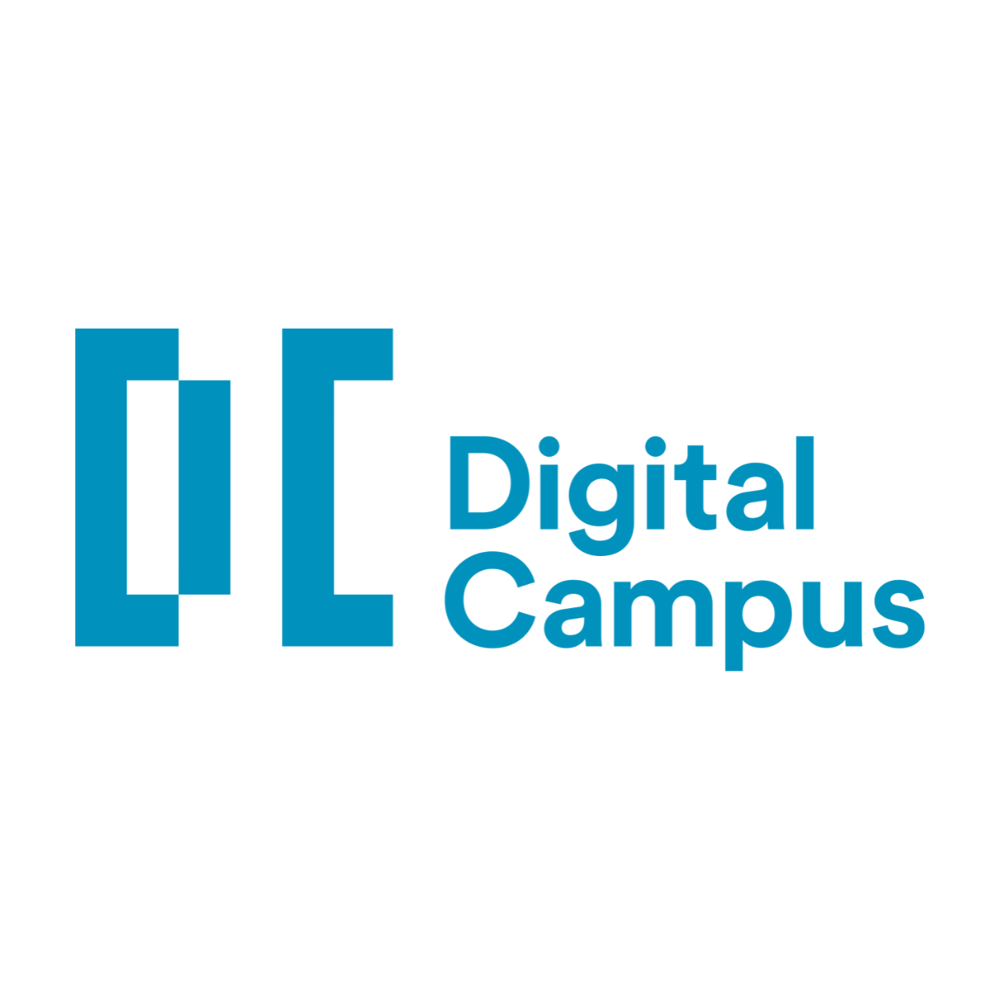

Parcours Professionel
parcours-professionel.com › Clément › Freelance
Freelance
2025 – Réalisation de site wordpress, optimisation et améliorations de site existant en
performance et SEO. Mise en place de campagnes meta ads, stratégie social média.

Galileo Global Education
parcours-professionel.com › Clément › GalileoGlobal › Education
Alternant Webmarketeur digital
Septembre 2024 – Décembre 2024 | Optimisations, créations et améliorations du
netlinking des articles de blog pour améliorer le SEO du site. Réalisations d'AB Testing
UX pour optimiser le parcours client. Rapport Google Analytics et Google Search
Console et propositions d'améliorations.

AFM Téléthon
parcours-professionel.com › Clément › AFM-Telethon
Alternant Intégrateur / Routeur emailing
2022 – 2024 | Intégration HTML CSS et routage de l'ensemble des emails de
fidélisation de l'AFM Téléthon, suivi de campagne à la performance. Mise en place de
triggers, landing page, personnalisation régionalisée d'emailing. Analyse et études des
différentes campagnes.
Compétences :
Data Customer Experience
▾
Analyse de données, visualisation, CRM, parcours client, UX/UI design, analytics, automatisation, personnalisation, segmentation client, optimisation de conversion.
- Maîtrise des outils d'analyse comme Google Analytics, Looker Studio et Hotjar
- Expérience dans la création de tableaux de bord et la visualisation de données
- Capacité à transformer les données en insights actionnables
SEO, SEM, publicité en ligne, stratégie de contenu, email marketing, marketing d'affiliation, analytics web, médias sociaux, automatisation marketing.
- Certifications Google Analytics et Google Ads
- Gestion de campagnes publicitaires sur Meta et Google
- Expérience en optimisation de la conversion et A/B testing
Design graphique, identité visuelle, communication digitale, storytelling, gestion de projet, production de contenu, stratégies de marque.
- Maîtrise des logiciels Adobe (Photoshop, Illustrator, InDesign)
- Conception et réalisation de supports de communication print et web
- Élaboration de stratégies de communication multicanal

Parcours universitaire
parcours-universitaire.com › Clément › Parcours-universitaire
Master Data Customer eXperience - Digital Campus
2024 - 2026 | En deux ans, j'aurai l'occasion d'améliorer mes connaissances en analyse de
données, Datavisualisation et marketing digital. J'aurai aussi l'opportunité de développer
des compétences en UX, CX et de consolider mes acquis en gestion de projet.

Digital Campus Paris
parcours-universitaire.com › Clément › DigitalCampusParis
Bachelor chef de projet digital
2022 - 2024 | Apprentissage de la conception de dispositifs digitaux dans des objectifs
de notoriétés, de promotions et de développement d'une marque. En trois ans j'ai pu
me former aux techniques du marketing et du web-marketing, du design et de la vidéo.

IUT Cergy
parcours-universitaire.com › Clément › IUT-Cergy
DUT génie civil construction durable
2021 - 2022 | Pendant plus d'un an j'ai pu améliorer mes compétences en anglais
(passage du TOEIC), gestion de multiples projets de construction, coordination des
équipes, suivi strict des échéanciers, expérience en collaboration transversale.